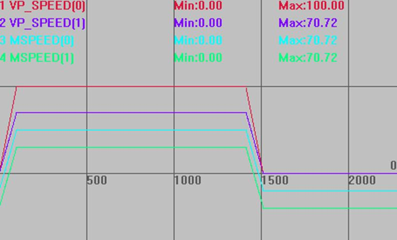

|
类型 |
轴状态 |
|
描述 |
返回轴当前运动的速度，单位为units/s。 当多轴运动时，主轴返回的是插补运动的速度，不是主轴的分速度。 非主轴返回的是相应的分速度，与MSPEED效果一致。 VP_SPEED在默认情况下是为显示多轴合成速度设计的，是没有负值的，除非把SYSTEM_ZSET的bit0的值设置为0，就可以用来显示单轴的命令速度，可正可负。 |
|
语法 |
VAR1 = VP_SPEED |
|
适用控制器 |
通用 |
|
例子 |
BASE(0,1) DPOS=0 ,0 '坐标清0 UNITS=100,100 '脉冲当量 SPEED =100,100 '主轴速度100units/s ACCEL=1000,1000 '加速度1000units/s/s DECEL=1000,1000 '减速度1000units/s/s TRIGGER '自动触发示波器 MOVE(100,100) '两轴各运动100units
速度曲线 主轴VP_SPEED是插补合成运动的速度。 非主轴VP_SPEED是轴当前分速度，与MSPEED一致。 VP_SPEED(0)垂直刻度100，无偏移 VP_SPEED(1)垂直刻度100，无偏移 MSPEED(0)垂直刻度100，偏移-20 MSPEED(1)垂直刻度100，偏移-40  |
|
相关指令 |